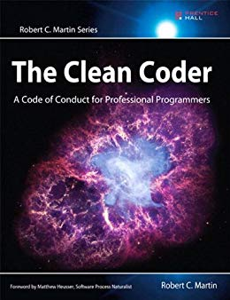
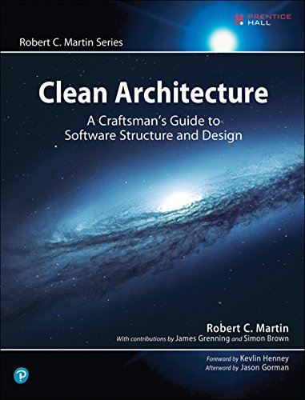
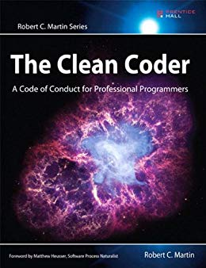
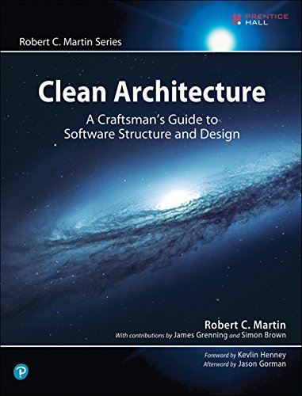

-
Fast - Um teste unitário deve ser executado rápido
-
Indepentent - Não deve depender de outro, podendo rodar em qualquer ordem
-
Repeatable - Pode ser executado quantas vezes quiser, mas trazendo o mesmo resultado
-
Self-Verifying - Auto verificavel, saber quando a execução foi correta e quando falhou
-
Timely - Deve ser criado no momento correto
Enfim
Não escreva código complexo, tempo e recursos gastos em um código ilegível serão muito maiores do que os obtidos com a otimização.
E mais importante, o code review deve ser motivacional e com compartilhamento de conhecimento, em vez de questinar a compêtencia
“Clean code is simple and direct. Clean code reads like well-written prose." Grady Booch
Fontes